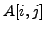
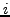
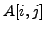
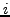

Next: Comparisons between networks
Up: Network Analysis Tools (NeAT)
Previous: Introduction
Contents
Subsections
To help the scientists apprehending their interest network, it is sometimes very useful to visualize them. Networks are generally represented by a set of dots (or of boxes) which represents its nodes that are linked via lines (the edges) or arows (arcs in the case of directed graphs). The nodes and the edges may present a label and / or a weight. The node label is generally indicated in the node box and the edge label is often placed on the line.
NeAT contains some facilities to represent networks. It contains its own visualization software (display-graph) that will be described in the following. Moreover, it allows the conversion of the graph into formats that may be used
by some visualisation tools like Cytoscape ([28], http://www.cytoscape.org), yED (http://www.yworks.com/products/yed/)or VisANT ([11], http://visant.bu.edu/).
Hereafter, we describe briefly some of the major formats used for graph description.
Incompatibility between file formats is a constant problem in bioinformatics. In order to facilitate the use of the NeAT website, most of our tools support several among the most popular formats used to describe networks.
- The tab-delimited format is a convenient and intuitive way to encode a graph. Each row represents an arc, and each column an attribute of this arc. The two columns fields are the source and target nodes. If the graph is directed, the source node is the node from which the arc leaves and the target node is the node to which the arc arrives. Logically, in undirected graph, the columns containing the source and the target node may be inverted. Some additional arc attributes (weight, label, color) can be placed in pre-defined columns. Orphan nodes can be included by specifying a source node without target. The tool Pathfinder extends this format by supporting any number of attributes on nodes or edges as well as the color, the label and the width of nodes and edges.
- A GML file is made up of nested key-value pairs. The most popular graph editors support GML as input format (like Cytoscape and yED). More information on this format can be found at http://www.infosun.fim.uni-passau.de/Graphlet/GML/.
- The DOT format is a plain text graph description language. DOT files can be loaded in the programs of the suite GraphViz (http://www.graphviz.org/). It is a simple way of describing graphs in a human- and computer-readable format. Similarly to GML, DOT supports various attributes on nodes (i.e. color, width, label).
- VisML is the XML format required by VisANT, a very light but powerful visualisation tool.
- Several tools also accept adjacency matrices as input. An adjacency matrix is a
 x table (with the number of nodes), where a cell  indicates the weight of the edge between nodes  and
x table (with the number of nodes), where a cell  indicates the weight of the edge between nodes  and  (or 1 if the graph is unweighted).
(or 1 if the graph is unweighted).
In this demonstration, we will show you how to visualize a network using some popular network visualization tools.
This network we will study consist in the top scoring edges of the yeast co-expression network included in the integrative database String [35]. This undirected weighted networks contains 537 nodes representing genes and 4801 edges. An edge between two nodes means that they are co-expressed. The weight expresses at which level both genes are co-expressed. We will explain how to display this network with NeAT, Cytoscape, yED and VisANT. As Cytoscape and yED are not online tools, we will only describe their utilization in the command-line section.
- In the NeATmenu, select the command format conversion / layout calculation.
In the right panel, you should now see a form entitled
``convert-graph''.
- Click on the link DEMO.
The form is now filled with a graph in the tab-delimited format, and the parameters have been
set up to their appropriate value for the demonstration, i.e., the network will be converted
from tab-delimited to GML format, the source node column is 1, the target column is 2 and the weight column is 3.
The option Calculate the layout of the nodes (only relevant for GML output may also be chosen, otherwise the nodes will all be in diagonal and the resulting graphic will not be very instructive.
If the edges present a weight, convert-graph is able to represent the weight of the edges by computing a color gradient proportional to edge weights and coloring the edges according to it. There are five different color gradients : blue, red, green, grey and yellow to red. The darker (or the more colored) it is, the higher the weight. Moreover convert-graph can also change the width of the edge proportionnally to its weight. To this, we must choose a color gradient for the Edge color intensity proportional to the weight and the option Edge width proportional to the weight of the edge must be checked (which is automatically the case with the demonstration).
- Click on the button GO.
The resulting graph in GML format is available as an HTML link. Right clink on the link and save it with name string_coexpression.gml.
- In the Next Step pannel, click on Display the graph.
The form of display-graph is displayed. By default, the figure output format is jpeg, change it to png which gives a better resolution. NeAT also allow the postscript format.
- Uncheck Calculate the layout of the nodes (mandatory for all input format except GML) as convert-graph already computed it.
- Check Edge width proportional to the weight of the edges
- Click on the GO button.
The figure is available by clicking on the HTML link. Clicking a the link leads to a static figure representing the
network.
- After the step Format conversion and layout calculation, click on the Load in VisANT
A page is displayed. Three links are available
- A link to the graph in the format you obtained it from convert-graph (here GML).
- A link (VisANT logo) to the VisANT applet
- A link to the graph in VisML (the input format of VisANT)
- Click on the logo of VisANT
The VisANT applet is loaded.
- Accept the authentification certifate.
If you have installed a stand-alone version of the NeAT distribution,
you can use the programs convert-graph and display-graph on the
command-line. This requires to be familiar with the Unix shell
interface. If you don't have the stand-alone tools, you can skip this
section and read the next section (Interpretation of the results). To visualize the networks with yED, VisANT or Cytoscape, you
must of course install them on your computer.
- First let us download the network file string_coex_simple.tab from the NeAT tutorial download page : http://rsat.scmbb.ulb.ac.be/rsat/data/neat_tuto_data/
- In this first step, we will convert the tab delimited String network that we just downloaded into a GML file by using this command. We compute the layout of the nodes. Moreover, we compute an edge width and an color proportional to the weight on the edge.
convert-graph -from tab -to gml -wcol 3 -i string_coex_simple.tab
-o string_coex_simple.gml -layout -ewidth -wcol 3 -ecolors fire
Use the following command to create a graph using the NeAT display-graph program.
display-graph -in_format gml -out_format png -i string_coex_simple.gml
-o string_coex_simple.png -ewidth
- Open Cytoscape
- Click on File
 Import Network... Select
Import Network... Select
- Select the file string_coex_simple.gml
If the graph contains more than 500 nodes, it will not be displayed immediately. Right click on the name of the graph file in the Cytopanel 1 and select Create view....
- Open yED
- Click on File Import
- Select the file string_coex_simple.gml
As NeAT GML converter add edge labels of the type nodeName1_nodeName2 for unweighted or unlabeled graph, you may need to remove the edge label for a better visibility.
- Click on one edge (random)
The edge you clicked on is now selected.
- Press Ctrl+A
All edges are now selected.
- In the Property view (Right of the screen), in the label part, uncheck the visible option.
Next: Comparisons between networks
Up: Network Analysis Tools (NeAT)
Previous: Introduction
Contents
RSAT
2009-09-04